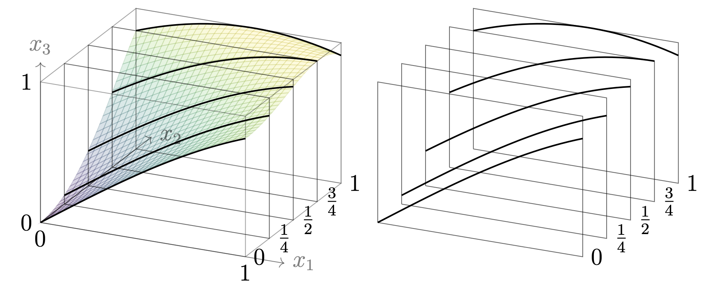
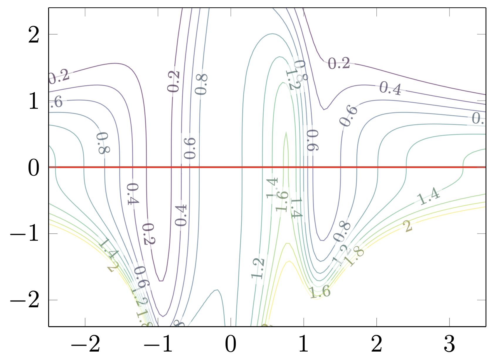
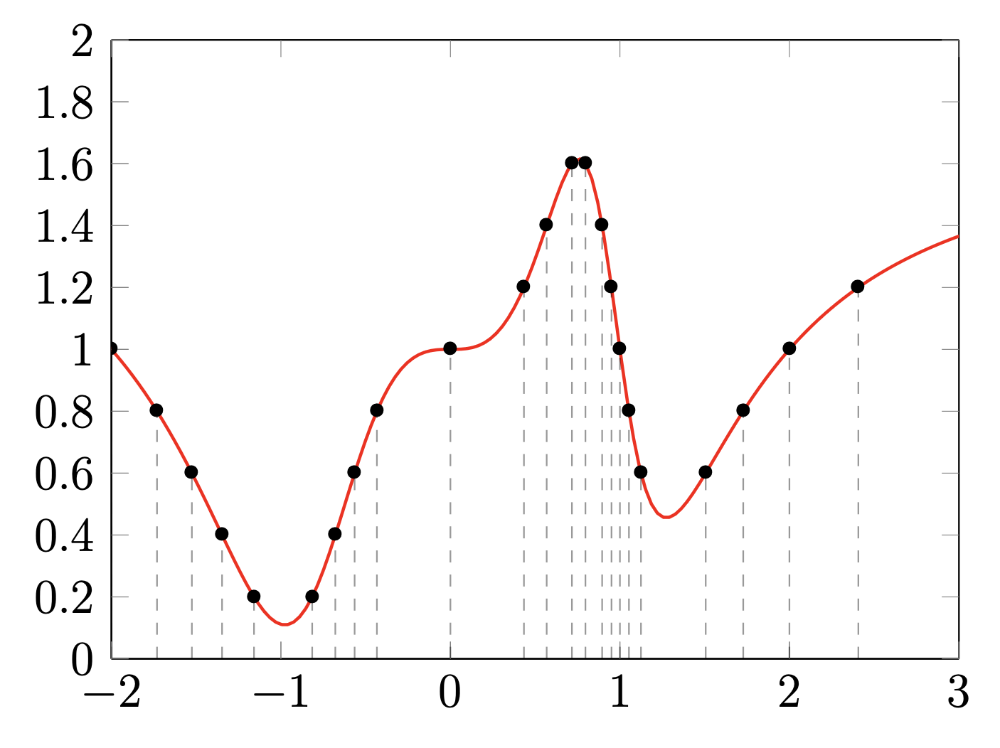
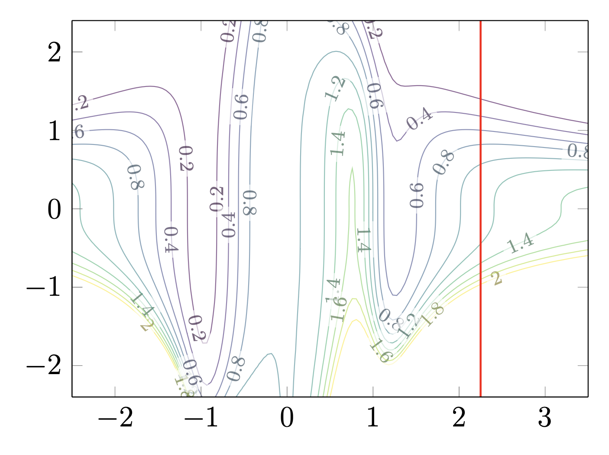
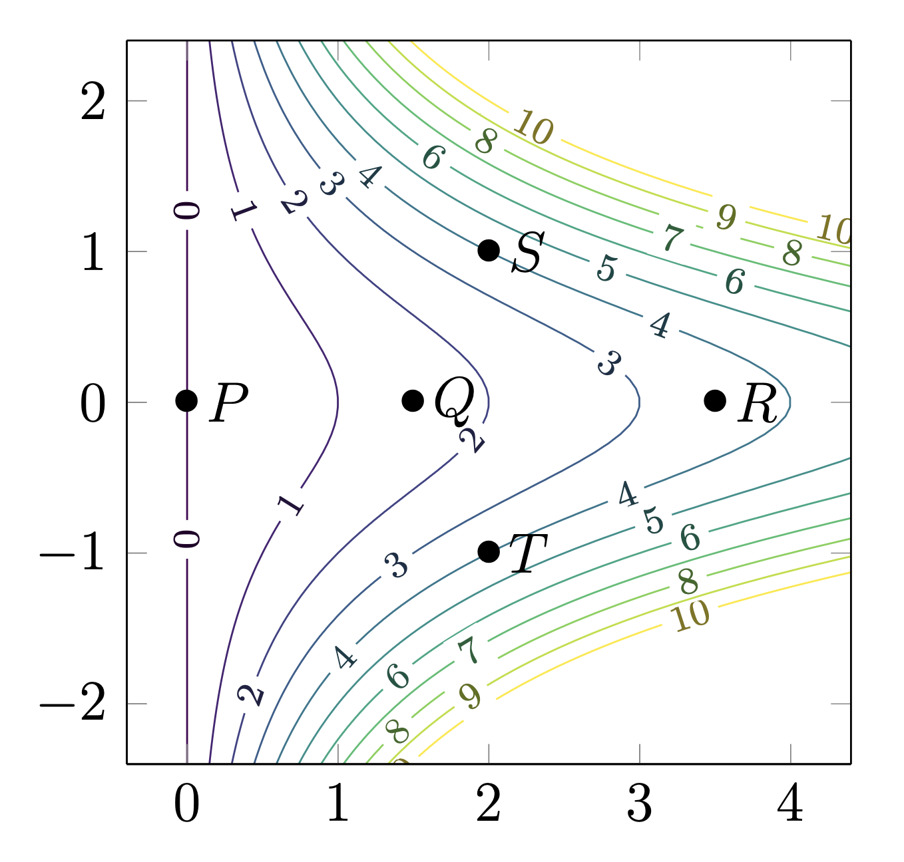

We now begin discussing derivatives of functions of several variables. The easiest kind of derivative for such a function can be obtained by taking a derivative of a single variable at a time, so that the problem is reduced to the calculus of a single variable. This leads to the notion of a partial derivative of a function. We define and study partial derivatives of functions of two variables, before proceeding to the definition for functions of a higher number of variables in Definition 8.2.2.
Definition8.1.1.
Let \(f(x,y)\) be a scalar-valued function in two variables. The partial derivative of \(f\) with respect to \(x\) at \((a,b)\) is the scalar quantity
We compute the partial derivative in \(x\) of an expression precisely by treating the \(y\)-variable as a constant, and differentiating in \(x\text{.}\) Similarily, we compute the partial derivative in \(y\) by treating the \(x\)-variable as a constant.
Note8.1.2.
There are several notations used for the partial derivative of a function \(f(x,y)\text{,}\) namely, we might write \(f_x(a,b)\) as
Given a function \(f(x,y)\) and \(b \in \R\text{,}\) the slice of the function \(f\) in the plane \(y = b\) is the function \(g: \R \to \R\) given by \(g(x) = f(x,b)\text{.}\) Similarily, for \(x \in \R\) the slice of \(f\) in the plane \(x = a\) is the function \(g: \R \to \R\) given by \(g(y) = f(a,y)\text{.}\)
Geometrically, the slice of a function \(f\) in the plane \(y = b\) corresponding to intersecting the surface given by the equation \(z = f(x,y)\) with the plane \(y = b\text{,}\) creating a curve in this plane.
Activity8.1.3.
Sketch the slices of the function \(f(x,y) = \sin(x + y^2)\) in the plane \(y = b\text{.}\)
This slice is a sine function with a phase shift of \(b^2\text{.}\) See Figure 8.1.4 for a sketch of these slices.

Figure8.1.4.The graph of \(f(x,y) = \sin(x + y^2)\) showing slices at different values of \(y\text{.}\) Each curve represents the function \(f(x,y)\) for a fixed value of \(y\text{.}\) From: Stanford’s MATH 51 textbook
Theorem8.1.5.Geometric Interpretation.
If we consider the surface in \(\R^3\) described by the equation \(z = f(x,y)\text{,}\) then
\(f_x(a,b)\) is the slope of the tangent line to the curve formed by intersecting the surface \(z = f(x,y)\) with the vertical plane \(y = b\text{.}\)
\(f_y(a,b)\) is the slope of the tangent line to the curve formed by intersecting the surface \(z = f(x,y)\) with the vertical plane \(x = a\text{.}\)
Activity8.1.4.
Let \(f(x,y) = 16 - x^2 - y^2\text{.}\) Find \(f_x(1,2)\) and \(f_y(1,2)\) and interpret these numbers as slopes of a certain curve.
This is the slope of the curve in the \(xz\) plane obtained by intersecting the surface \(z = 16 - x^2 - y^2\) with the plane defined by the equation \(y = 2\text{,}\) at the point \((1,2,11)\text{.}\) That is, the tangent line of the curve at this point is given by \(z - 11 = -2 ( x - 1 )\text{.}\)
This is the slope of the curve in the \(yz\) plane obtained by intersecting the surface \(z = 16 - x^2 - y^2\) with the plane defined by the equation \(x = 1\text{,}\) at the point \((1,2,11)\text{.}\) That is, the tangent line of the curve at this point is given by \(z - 11 = -4 ( y - 2 )\text{.}\)
Activity8.1.5.
Consider the contour plot shown in Figure 8.1.6 for a function \(F\) with contour lines at increments of \(0.2\text{.}\) In particular, consider the curve obtained from the slice \(y = 0\text{,}\) indicated by the red line in Figure 8.1.6. By interpreting the contour plot, what can we say about the slopes of this curve, or equivalently, the values of \(F_x\) on this line?

Figure8.1.6.A contour plot for a function with increments of \(0.2\text{.}\) The line \(y = 0\) is indicated in red. From: Stanford’s MATH 51 textbook
Solution.
Here is some of the information we can read from the contour plot:
Between \(x = -1\) and \(x = 0\text{,}\) the contour values increase (from about \(0.2\) to \(1\)), indicating \(F_x > 0\) in this region (the function \(F\) is increasing).
Near \(x = 1\text{,}\) the contour lines are very close together, and the contour values decrease, indicating the \(F_x \lt 0\text{,}\) and that the magnitude of \(F_x\) is large (the curve slopes steeply downward).
Between \(x = 1.5\) and \(x = 3\text{,}\) the contour values increase, indicating \(F_x > 0\text{.}\) (the function \(F\) is increasing).
See Figure 8.1.7 for a graph depicting the curve, to check what we have deduced is correct.

Figure8.1.7.The slice of the function \(F(x,y)\) where \(y = 0\text{.}\) The dashed lines correspond to increments of \(0.2\) in the \(x\)-axis. From: Stanford’s MATH 51 textbook
Activity8.1.6.
Consider Figure 8.1.8, which is the same contour plot as in Figure 8.1.6, but with the vertical line \(x = 2.25\) indicated instead. As in Activity 8.1.5, read off the behaviour of the partial derivatives \(F_y\) from the contour plot.

Figure8.1.8.A contour plot with increments of \(0.2\text{,}\) with the vertical line \(x = 2.25\) highlighted in red. From: Stanford’s MATH 51 textbook
Solution.
Here is some information that can be deduced from the contour plot:
The contour values are always decreasing as we increase \(y\) along the red line, so that \(F_y \lt 0\) on this line.
The contour lines are closest together near \(y = -1\text{,}\) so \(F_y(2.25,y)\) will have largest magnitude on the line near \(y = -1\text{.}\)
Generally, the spacing of contour lines corresponds to the magnitude of partial derivatives, and the sign of the partial derivatives corresponds to whether the function increases or decreasing in that direction.
Activity8.1.7.
Consider the function \(f(x,y) = x(y^2 + 1)\text{,}\) whose contour plot is indicated in Figure 8.1.9. Five points are marked on the plot: \(P = (0,0)\text{,}\)\(Q = (3/2,0)\text{,}\)\(R = (7/2,0)\text{,}\)\(S = (2,1)\text{,}\) and \(T = (2,-1)\text{.}\) For each of these five points, determine from the contour plot whether \(f_x\) is positive, negative, or zero, and whether \(f_y\) is positive, negative, or zero. Then calculate these derivatives exactly and check whether your observations were correct.

Figure8.1.9.Contour plot for \(f(x,y) = x(y^2 + 1)\) with increments of \(1\text{,}\) and five points \(P\text{,}\)\(Q\text{,}\)\(R\text{,}\)\(S\text{,}\) and \(T\) indicated. From: Stanford’s MATH 51 textbook
Solution.
At all five points, \(f_x > 0\) because the contour values increase as increase values of \(x\text{.}\) The contour lines around points \(S\) and \(T\) are more tightly packed than around \(P\text{,}\)\(Q\text{,}\) and \(R\text{,}\) indicating that \(f_x\) has larger magnitude at \(S\) and \(T\) than at \(P\text{,}\)\(Q\text{,}\) and \(R\text{.}\)
At the point \(P\text{,}\)\(f_y = 0\) since the contour line passing through \(P\) is a straight vertical line. It is not possible to determine the sign of \(f_y\) at the points \(Q\) and \(R\text{,}\) but we know the value of \(f_y\) must be small since the contour lines are more spread out than anywhere else in the plot. At the point \(S\text{,}\)\(f_y > 0\text{,}\) since the contour values increase as we increase in \(y\) values. At the point \(T\text{,}\)\(f_y \lt 0\) since the contour values decrease.
We now verify these observations by computing partial derivatives. We check that
If the variables \(x_1,\dots,x_n\) are denoted using different symbols, these symbols might also be used to denote the partial derivatives instead. For instance, in \(\R^3\text{,}\) we might write a function as \(f(x,y,z)\text{,}\) and then the three partial derivatives of \(f\) may be denoted using any of the following four notations:
\(\frac{\partial f}{\partial x}\text{,}\)\(\frac{\partial f}{\partial y}\text{,}\) and \(\frac{\partial f}{\partial z}\text{.}\)
\(f_x, f_y\text{,}\) and \(f_z\text{.}\)
\(\partial_x f, \partial_y f\) and \(\partial_z f\text{.}\)
\(D_1 f\text{,}\)\(D_2 f\text{,}\) and \(D_3 f\text{.}\)
As for functions of two variables, we can calculate these derivatives by treating all variables but that we are taking the partial derivative of as constants.
Activity8.1.8.
If \(f(x,y,z) = 5x^2y^2z^3\text{,}\) find \(f_x\text{,}\)\(f_y\text{,}\) and \(f_z\text{.}\)
Solution.
To find \(f_x\text{,}\) treat \(y\) and \(z\) as constants:
Given a scalar-valued function \(f\text{,}\) the partial derivatives of \(f\) (where defined) are also scalar-valued functions, so we can consider partial derivatives of that function as well, which leads to higher order partial derivatives.
Definition8.1.11.
If \(f\) is a function of two variables, then the second-order partial derivatives of \(f\) are defined as:
The derivative \(f_{xx}\) or \(\frac{\partial^2 f}{\partial x^2}\text{,}\) obtained by taking the partial derivative of \(f\) twice in the \(x\) variable.
The derivative \(f_{yx}\) or \(\frac{\partial^2 f}{\partial y \partial x}\text{,}\) obtained by first differentiating \(f\) in the \(x\) variable, and then differentiating \(f\) in the \(y\) variable.
The derivative \(f_{xy}\text{,}\) or \(\frac{\partial^2 f}{\partial x \partial y}\text{,}\) obtained by first differentiating \(f\) in the \(y\) variable, and then differentiating \(f\) in the \(x\) variable.
The derivative \(f_{yy}\text{,}\) or \(\frac{\partial^2 f}{\partial y^2}\text{,}\) obtained by differentiating \(f\) twice in the \(y\) variable.
Similarily, for a function \(f(x_1,\dots,x_n)\text{,}\) the higher derivatives of \(f\) are defined as \(f_{x_i x_j} = \frac{\partial^2 f}{\partial x_i \partial x_j}\) for \(1 \leq i,j \leq n\text{,}\) obtained by first differentiating \(f\) in the variable \(x_j\text{,}\) and then differentiating \(f\) in the \(x_i\) variable.
Theorem8.1.12.Clairaut’s Theorem.
Suppose a scalar-valued function \(f\) is defined in an open ball \(B\) that contains a point \(\mathbf{a}\text{.}\) If the functions \(f_{x_i x_j}\) and \(f_{x_j x_i}\) are well-defined and continuous on the ball \(B\text{,}\) then \(f_{x_i x_j}(\mathbf{a}) = f_{x_j x_i}(\mathbf{a})\text{.}\)
Activity8.1.11.
In this activity we compute all four partial derivatives of the function \(f(x,y) = x \ln y + y e^x\text{.}\)
(a)
First compute \(f_x\) and \(f_y\text{.}\)
Solution.
We calculate that
\begin{equation*}
f_x(x,y) = \ln y + y e^x
\end{equation*}
Notice that both functions are continuous, and equal to one another, as guaranteed by Theorem 8.1.12.
Remark8.1.13.
For most functions \(f\) encountered in practice, the second-order partial derivatives are continuous where defined, and so Theorem 8.1.12 applies. However, there are functions for which mixed partial derivatives are not equal to one another.
Activity8.1.12.
Find all four second partial derivatives of the function
We can collect the partial derivatives of a scalar-valued function to obtain a vector.
Definition8.1.14.
Let \(f\) be a scalar-valued function of \(n\)-variables, and suppose all second-order derivatives of \(f\) are well-defined and continuous on the domain of \(f\text{.}\) The gradient of \(f\) is the vector-valued function
An important property of the gradient of a function at a point is that it is a vector that is perpendicular to the level curves of the function.
Theorem8.1.15.
Let \(f(x,y)\) be a function with continuous partial derivatives. If \((a,b)\) is a point where \(\nabla f(a,b) \neq \mathbf{0}\text{,}\) then \(\nabla f(a,b)\) is perpendicular to the level curve of \(f\) passing through the point \((a,b)\text{.}\)
Figure8.1.16.A contour plot of the function \(f(x,y) = xy - x\text{,}\) with the gradient vectors at three points \(\mathbf{a} = (1,3)\text{,}\)\(\mathbf{b} = (2,2)\text{,}\) and \(\mathbf{c} = (4,3/2)\text{.}\) From: Stanford’s MATH 51 textbook
Definition8.1.17.
Let \(f\) be a scalar-valued function of \(n\)-variables. The Hessian matrix of \(f\) at a point \((x,y)\) is the \(n \times n\) matrix of second partial derivatives:
That is, \(H_f(\mathbf{x})\) is the matrix whose \((i,j)\)-entry is the second derivative \(\frac{\partial^2 f}{\partial x_i \partial x_j}\) obtained by first differentiating in the \(x_j\) variable, and then the \(x_i\) variable. By Clairaut’s Theorem, the Hessian is then a symmetric matrix at any interior point of the domain of \(f\text{.}\)
In particular, the Hessian of a scalar-valued function of two variables can be written
Let \(f(x,y,z) = xy + yz + xz\text{.}\) Compute it’s gradient \(\nabla f\) and Hessian \(H_f\) at a general point \((x,y,z)\text{.}\)
Solution.
We begin by computing the gradient. We calculate that
\begin{equation*}
f_x(x,y,z) = y + 0 + z\text{,}
\end{equation*}
that
\begin{equation*}
f_y(x,y,z) = x + z + 0\text{,}
\end{equation*}
and that
\begin{equation*}
f_z(x,y,z) = 0 + y + x\text{.}
\end{equation*}
So \(\nabla f(x,y,z) = (y + z, x + z, y + x)\text{.}\)
Next, we compute the second derivatives of \(f\text{.}\) We compute that \(f_{xx} = f_{yy} = f_{zz} = 0\text{,}\) and that \(f_{xy} = f_{xz} = f_{yx} = f_{yz} = f_{zx} = f_{zy} = 1\text{.}\) So